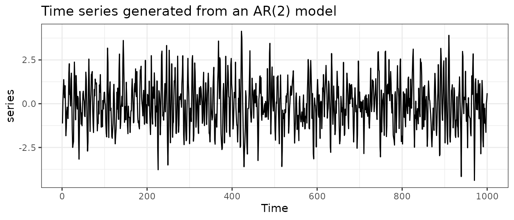
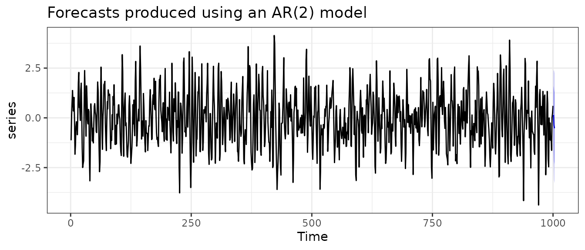
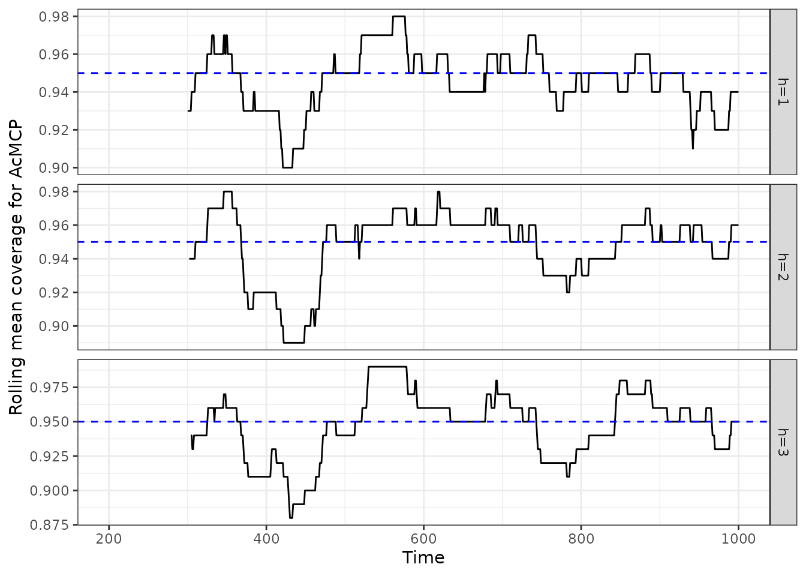
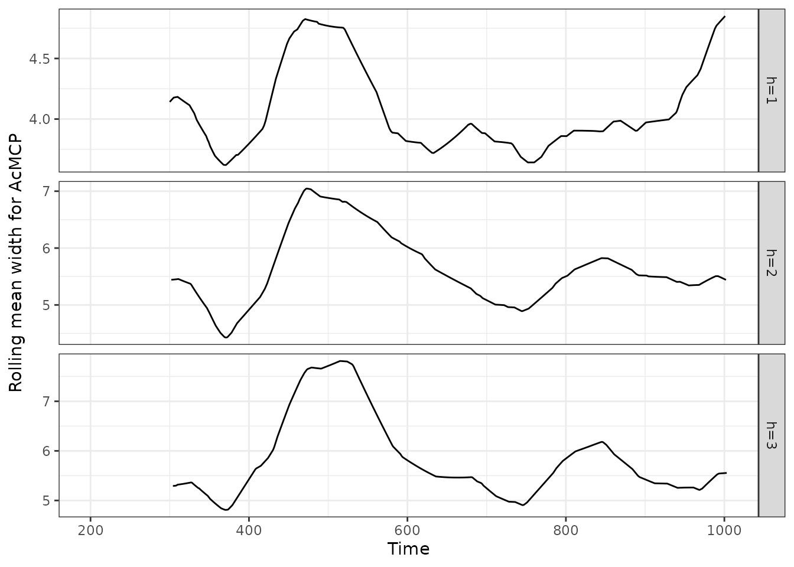
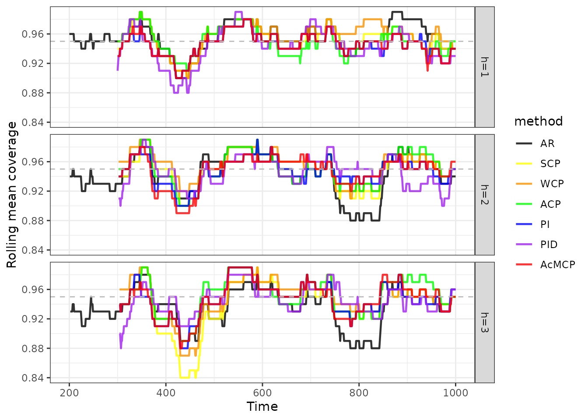
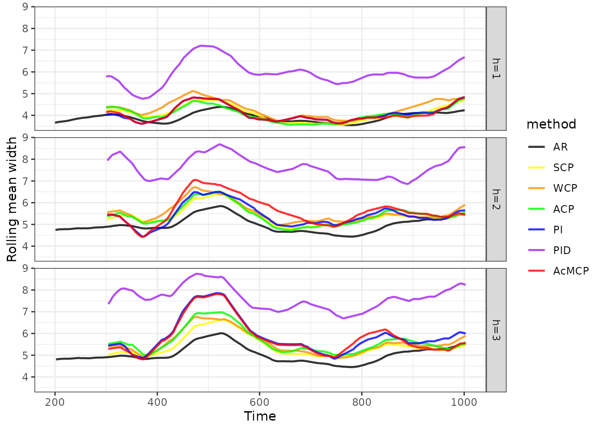

The conformalForecast package implements conformal prediction methods for multistep-ahead time series forecasting. Given a point forecasting model and a validation set of past forecast errors, these methods construct prediction intervals that are distribution-free: they do not rely on an assumed error distribution (such as Gaussian errors), and instead calibrate directly from the empirical behaviour of past errors.
The package provides four conformal methods: split conformal
prediction (scp()), adaptive conformal prediction
(acp()), conformal PID control (pid()) and
autocorrelated multistep-ahead conformal prediction
(acmcp()). A unified conformal() function can
call any of them by name. This vignette works through all four, starting
from the simplest (SCP) and ending with AcMCP, the main contribution of
the accompanying paper.
library(conformalForecast)
library(forecast)
library(ggplot2)
library(dplyr)
library(tibble)
library(tsibble)Data simulation
Suppose we want to forecast a time series generated from an AR(2) model with \(\phi_1 = 0.8\), \(\phi_2 = -0.5\), and \(\sigma^2 = 1\).
We simulate 1005 observations and hold the last five back: the first 1000 are used throughout the vignette, and the remaining five are used later to demonstrate updating a fitted conformal object with newly arrived data.
set.seed(0)
series_all <- arima.sim(n = 1005, list(ar = c(0.8, -0.5)), sd = sqrt(1))
series <- head(series_all, 1000)
new_data <- as.numeric(tail(series_all, 5))
autoplot(series) +
labs(
title = "Time series generated from an AR(2) model"
) +
theme_bw()
Time series cross-validation
Before we can calibrate any conformal method, we need a record of
past forecast errors to calibrate against. We obtain this with
cvforecast(), which repeatedly fits the AR(2) model on a
rolling forecast origin and produces out-of-sample point forecasts and
errors at every origin, for every forecast horizon up to
h.
Two arguments control how the origins are laid out.
forward = TRUE appends an extra \(h\)-step forecast made from the final
observation, so that the object carries genuinely future forecasts as
well as the validation history. window sets how many recent
observations each refit sees: a number gives a fixed-length rolling
estimation window, while window = NULL lets the estimation
window expand over time. A non-NULL level is
required, since the conformal methods calibrate against the nominal
levels stored in the object.
far2 <- function(x, h, level) {
Arima(x, order = c(2, 0, 0)) |> forecast(h = h, level)
}
fc <- cvforecast(series, forecastfun = far2, h = 3, level = c(80, 95),
forward = TRUE, window = 100, initial = 1)
summary(fc)
#> Cross-validation
#>
#> Call:
#> cvforecast(y = series, forecastfun = far2, h = 3, level = c(80,
#> 95), forward = TRUE, initial = 1, window = 100)
#>
#> fit_times = 901 (the forward step included)
#>
#> Forecasts of the forward step:
#> Point Forecast Lo 80 Hi 80 Lo 95 Hi 95
#> 1001 0.1430927 -1.317635 1.603821 -2.090898 2.377083
#> 1002 -0.3763649 -2.181868 1.429138 -3.137644 2.384914
#> 1003 -0.5230650 -2.328976 1.282846 -3.284968 2.238838
#>
#> Cross-validation error measures:
#> ME MAE MSE RMSE MPE MAPE MASE RMSSE Winkler_95 MSIS_95
#> CV -0.018 0.972 1.506 1.102 36.202 218.01 0.947 0.866 5.765 5.616
(fc_score <- accuracy(fc, byhorizon = TRUE))
#> Winkler_95 MSIS_95
#> CV h=1 4.784124 4.659562
#> CV h=2 6.247227 6.090071
#> CV h=3 6.269019 6.105162
(fc_cov <- coverage(fc, window = 100, level = 95))
#> h=1 h=2 h=3
#> 0.9544444 0.9421580 0.9354120
(fc_wid <- width(fc, window = 100, level = 95, includemedian = TRUE))
#> Mean width:
#> h=1 h=2 h=3
#> 3.915949 4.999164 5.049476
#>
#> Median width:
#> h=1 h=2 h=3
#> 3.885016 4.919813 4.957593The object fc stores point forecasts MEAN
and forecast errors ERROR as multivariate time series, in
which column \(h\) holds the values for
forecast horizon \(h\). In package
notation, the error made forecasting \(y_{t+h}\) from origin \(t\) is \[e_{t+h|t} = y_{t+h} - \hat{y}_{t+h|t}.\]
Every conformal method below calibrates against this ERROR
matrix, one column (one horizon) at a time.
Conformal prediction
The four methods differ in how the quantile used to build the intervals is obtained, from a plain empirical quantile of past scores in SCP to an online recursion in the later methods. They are presented below in that order.
The conformal() function
All four methods share the same calling convention: they accept a
cvforecast object, or a previous conformal fit when
updating, and return prediction intervals for one or more nominal
levels. The conformal() function provides a unified
interface to these methods, which can be selected through its
method argument:
method = |
function | core idea |
|---|---|---|
| “scp” | scp() |
Empirical quantile of past nonconformity scores, on an expanding or rolling calibration window |
| “acp” | acp() |
Online update of the miscoverage target alpha in response to whether the last interval covered |
| “pid” | pid() |
P (quantile tracking) + I (bounded integral correction) + D (scorecasting) applied per horizon |
| “acmcp” | acmcp() |
Same P+I+D structure as PID, but the scorecaster exploits correlation across horizons |
conformal(fc, method = "scp", ...) is exactly equivalent
to scp(fc, ...): conformal() forwards
object and ... to the chosen function and
returns its result unchanged. The rest of this vignette calls
scp(), acp(), pid() and
acmcp() directly, to keep the method-specific arguments
explicit.
A few arguments recur across the methods and mean much the same thing
everywhere. ncal is the length of the calibration history:
for SCP and ACP it is the number of past scores the quantile is computed
from, while for PID and AcMCP, which track the quantile recursively, it
acts as a burn-in length before the recursion starts producing
intervals. rolling = TRUE restricts that history to the
most recent ncal errors wherever a window is used;
rolling = FALSE (the default) lets it expand over time.
symmetric chooses between calibrating absolute errors
(TRUE) and calibrating the lower and upper tails separately
(FALSE); AcMCP supports only the asymmetric case and
therefore has no symmetric argument.
Every method returns an object whose class vector is the method name
followed by cpforecast, cvforecast and
forecast, so cpforecast methods such as
accuracy(), coverage() and
width() apply to all four. Once you have one, you can
extend it with newly observed data without recomputing the whole
history, using update(); see
vignette("update", package = "conformalForecast") for
details.
Classical split conformal prediction (SCP)
SCP is the simplest of the four methods and a natural baseline. For each horizon \(h\), it forms a vector of nonconformity scores \(s_{t+h|t}\) from past errors, and predicts an interval by adding and subtracting an empirical quantile of those scores from the point forecast.
If symmetric = TRUE, the score is the absolute error,
\(s_{t+h|t} = |e_{t+h|t}|\), and the
\((1-\alpha)\)-quantile \(\hat{q}_{t+h|t}\) of the calibration scores
gives a symmetric interval \[\left[\hat{y}_{t+h|t} - \hat{q}_{t+h|t},\
\hat{y}_{t+h|t} + \hat{q}_{t+h|t}\right].\] If
symmetric = FALSE (the default we use below), upper and
lower bounds are calibrated separately from signed scores, \(s^u_{t+h|t} = e_{t+h|t}\) and \(s^l_{t+h|t} = -e_{t+h|t}\), using the \((1-\alpha/2)\)-quantiles \(\hat{q}^u_{t+h|t}\) and \(\hat{q}^l_{t+h|t}\) of the respective
scores, giving \[\left[\hat{y}_{t+h|t} -
\hat{q}^l_{t+h|t},\ \hat{y}_{t+h|t} + \hat{q}^u_{t+h|t}\right].\]
Asymmetric scoring lets the interval be wider on one side than the
other, which is useful whenever the error distribution itself is
skewed.
The calibration set the quantile is computed on can grow over time
(rolling = FALSE): at time \(t\) it is the expanding set \(s_{1+h|1}, \dots, s_{t|t-h}\), using every
score observed so far. Or it can be a fixed-length trailing window
(rolling = TRUE): a window of ncal most recent
scores. A rolling window adapts faster to a changing error distribution
but uses less data per quantile estimate; an expanding window is more
stable but slower to react if the error distribution drifts. Below we
use a rolling window of ncal = 100.
scpfc <- scp(fc, symmetric = FALSE, ncal = 100, rolling = TRUE,
weightfun = NULL, kess = FALSE, quantiletype = 1)
(scpfc_score <- accuracy(scpfc, byhorizon = TRUE))
#> Winkler_95 MSIS_95
#> CV h=1 5.003118 4.830704
#> CV h=2 6.527138 6.302017
#> CV h=3 6.635156 6.403022
(scpfc_cov <- coverage(scpfc, window = 100, level = 95))
#> h=1 h=2 h=3
#> 0.9500000 0.9473684 0.9396985
(scpfc_wid <- width(scpfc, window = 100, level = 95, includemedian = TRUE))
#> Mean width:
#> h=1 h=2 h=3
#> 4.114655 5.368746 5.403647
#>
#> Median width:
#> h=1 h=2 h=3
#> 4.054006 5.334842 5.326651scp() also allows non-equal weighting of the calibration
scores via weightfun, a function that maps the number of
scores in the calibration set to a vector of weights. This lets more
recent scores count more toward the quantile than older ones, which is a
middle ground between a rolling window (hard cutoff) and an expanding
window (no decay). When weights are used, setting
kess = TRUE computes the quantile using Kish’s effective
sample size, \(n_{\mathrm{eff}} = (\sum w)^2 /
\sum w^2\), rather than the raw number of scores, so the quantile
estimate reflects how much effective information the weighted
sample actually carries.
expweight <- function(n) 0.99^{n+1-(1:n)}
scpfc_exp <- scp(fc, symmetric = FALSE, ncal = 100, rolling = TRUE,
weightfun = expweight, kess = FALSE, quantiletype = 1)
(scpfc_exp_score <- accuracy(scpfc_exp, byhorizon = TRUE))
#> Winkler_95 MSIS_95
#> CV h=1 5.108981 4.930413
#> CV h=2 6.563368 6.336281
#> CV h=3 6.615147 6.381920
(scpfc_exp_cov <- coverage(scpfc_exp, window = 100, level = 95))
#> h=1 h=2 h=3
#> 0.9550000 0.9548872 0.9484925
(scpfc_exp_wid <- width(scpfc_exp, window = 100, level = 95, includemedian = TRUE))
#> Mean width:
#> h=1 h=2 h=3
#> 4.322785 5.567499 5.585576
#>
#> Median width:
#> h=1 h=2 h=3
#> 4.297306 5.455463 5.499007SCP is the right choice when you want a simple, well-understood baseline and the error distribution within the calibration window is reasonably stable; it does not adapt online to feedback about whether recent intervals actually covered, which is exactly what the next two methods add.
Adaptive conformal prediction (ACP)
ACP (Gibbs and Candes 2021) keeps the SCP calibration mechanics but replaces the fixed miscoverage level \(\alpha\) with one that adapts online, based on whether the previous interval covered the outcome or not: \[\alpha_{t+h|t} := \alpha_{t+h-1|t-1} + \gamma\left(\alpha - \mathrm{err}_{t|t-h}\right),\] computed separately for each horizon \(h\), where \(\mathrm{err}_{t|t-h} = 1\) if the score \(s_{t|t-h}\) exceeded the quantile \(q_{t|t-h}\) used at that step (a miss), and \(0\) otherwise (a hit). If misses have recently been more frequent than \(\alpha\), \(\alpha_{t+h|t}\) is pushed down, which widens the next interval; if hits have been more frequent than intended, \(\alpha_{t+h|t}\) is pushed up, narrowing the interval. The quantile itself, at each step, is still an empirical quantile of a calibration window of past scores (expanding or rolling, exactly as in SCP), but now computed at the current \(\alpha_{t+h|t}\) rather than a fixed \(\alpha\).
The step size \(\gamma > 0\)
(argument gamma) controls how fast \(\alpha\) reacts: larger values adapt more
quickly to a change in the underlying error distribution but make the
interval width more volatile; smaller values are steadier but slower to
correct a persistent miscoverage. This adaptivity is what lets ACP
maintain close-to-nominal long-run coverage under distribution shift,
where an SCP quantile computed from a stale calibration window would
not.
acpfc <- acp(fc, symmetric = FALSE, gamma = 0.005, ncal = 100, rolling = TRUE)
(acpfc_score <- accuracy(acpfc, byhorizon = TRUE))
#> Winkler_95 MSIS_95
#> CV h=1 5.036517 4.863717
#> CV h=2 6.644759 6.416735
#> CV h=3 6.785646 6.551065
(acpfc_cov <- coverage(acpfc, window = 100, level = 95))
#> h=1 h=2 h=3
#> 0.9487500 0.9498747 0.9497487
(acpfc_wid <- width(acpfc, window = 100, level = 95, includemedian = TRUE))
#> Mean width:
#> h=1 h=2 h=3
#> 4.119178 5.420955 5.635120
#>
#> Median width:
#> h=1 h=2 h=3
#> 4.034989 5.426268 5.499007Conformal PID control (PID)
PID (Angelopoulos, Candes, and Tibshirani 2024) generalizes ACP by tracking the quantile \(q_{t+h|t}\) itself (rather than \(\alpha\)) through three additive components, evocative of a proportional-integral-derivative controller: \[q_{t+h|t}=\underbrace{q_{t+h-1|t-1} + \eta\left(\mathrm{err}_{t|t-h}-\alpha\right)}_{\text{P}} + \underbrace{r_t\!\left(\sum_{i=1}^t\left(\mathrm{err}_{i|i-h}-\alpha\right)\right)}_{\text{I}} + \underbrace{\hat{s}_{t+h|t}}_{\text{D}},\] again computed separately for each horizon \(h\).
- The P term, quantile tracking, applies the same idea as ACP’s \(\alpha\) update directly to the quantile:
\(q_{t+h-1|t-1} + \eta(\mathrm{err}_{t|t-h} -
\alpha)\), with \(q_{1+h|1}\)
initialized to \(0\). The step size
\(\eta\) (argument
lr) is scaled internally by the recent range of the errors, so it adapts to the level of forecast uncertainty rather than being a fixed number of score units. - The I term, error integration, corrects a persistent bias in
realized coverage, which the memoryless P term reacts to only slowly. It
feeds the cumulative miscoverage \(\sum_{i=1}^t (\mathrm{err}_{i|i-h} -
\alpha)\) through a bounded, nonlinear saturation function \[r_t(x) = K_{\mathrm{I}} \tan\!\left(\frac{x
\log(t)}{t\, C_{\mathrm{sat}}}\right),\] where \(\tan(x) = \mathrm{sign}(x)\cdot\infty\)
once \(x \notin [-\pi/2, \pi/2]\).
\(C_{\mathrm{sat}}\) and \(K_{\mathrm{I}}\) are positive constants
chosen heuristically: \(K_{\mathrm{I}}\) (argument
KI) puts the integrator on the same scale as the scores, and \(C_{\mathrm{sat}}\) (argumentCsat) is chosen so that, by a target timeTg, the method achieves at least \(1-\alpha-\delta\) absolute coverage for a chosen tolerancedelta. You can either supplyCsatdirectly, as we do below, or leave it at its default ofNULLand let it be derived fromTganddelta; in the latter caseTgmust be greater than 1 anddeltamust lie in \((0, 1)\). Settingintegrate = FALSEdrops this term entirely. - The D term, scorecasting, adds a forecast of the nonconformity score
itself, \(\hat{s}_{t+h|t}\), produced
by fitting a user-supplied
scorecastfunto the scores observed so far. This anticipates predictable structure in the scores (a trend, a seasonal pattern) instead of only reacting to it after the fact. Setscorecast = FALSEto omit this term, or supply, e.g., a naive forecaster as below.
# PID setup
Tg <- 1000; delta <- 0.01
Csat <- 2 / pi * (ceiling(log(Tg) * delta) - 1 / log(Tg))
KI <- 2
lr <- 0.1
# PID without scorecaster
pidfc_nsf <- pid(fc, symmetric = FALSE, ncal = 100, rolling = TRUE,
integrate = TRUE, scorecast = FALSE,
lr = lr, Tg = Tg, KI = KI, Csat = Csat)
(pidfc_nsf_score <- accuracy(pidfc_nsf, byhorizon = TRUE))
#> Winkler_95 MSIS_95
#> CV h=1 5.122446 4.948241
#> CV h=2 6.760180 6.529263
#> CV h=3 6.962396 6.718390
(pidfc_nsf_cov <- coverage(pidfc_nsf, window = 100, level = 95))
#> h=1 h=2 h=3
#> 0.9437500 0.9461153 0.9447236
(pidfc_nsf_wid <- width(pidfc_nsf, window = 100, level = 95, includemedian = TRUE))
#> Mean width:
#> h=1 h=2 h=3
#> 4.129826 5.443648 5.878857
#>
#> Median width:
#> h=1 h=2 h=3
#> 4.051401 5.450223 5.748390
# PID with a Naive method as the scorecaster
naivefun <- function(x, h) {
naive(x) |> forecast(h = h)
}
pidfc <- pid(fc, symmetric = FALSE, ncal = 100, rolling = TRUE,
integrate = TRUE, scorecast = TRUE, scorecastfun = naivefun,
lr = lr, Tg = Tg, KI = KI, Csat = Csat)
(pidfc_score <- accuracy(pidfc, byhorizon = TRUE))
#> Winkler_95 MSIS_95
#> CV h=1 7.127771 6.889720
#> CV h=2 9.341393 9.032121
#> CV h=3 10.042744 9.711128
(pidfc_cov <- coverage(pidfc, window = 100, level = 95))
#> h=1 h=2 h=3
#> 0.9387500 0.9411028 0.9409548
(pidfc_wid <- width(pidfc, window = 100, level = 95, includemedian = TRUE))
#> Mean width:
#> h=1 h=2 h=3
#> 6.004732 7.686964 7.618278
#>
#> Median width:
#> h=1 h=2 h=3
#> 5.972480 7.664302 7.656036PID is a good choice when you want both the persistent-bias correction that ACP lacks (via I) and the ability to plug in domain knowledge about the score dynamics (via D, through the scorecaster). Note, however, that the scorecaster here is trained separately at each horizon \(h\), using only that horizon’s own score history. It does not use the fact that, at a given origin, the scores at horizons \(1, \dots, h-1\) are already known and correlated with the score at horizon \(h\). That is the gap AcMCP closes.
Autocorrelated multistep-ahead conformal prediction (AcMCP)
AcMCP (Wang and Hyndman 2024) keeps PID’s P+I+D structure, and supports only asymmetric (signed-error) scores, but replaces the scorecaster in the D term. Instead of forecasting \(e_{t+h|t}\) from its own history in isolation, the scorecaster combines two models that use the other horizons’ errors from the same origin \(t\): an \(\mathrm{MA}(h-1)\) model fitted to the horizon-\(h\) error series, and a linear regression of \(e_{t+h|t}\) on \(e_{t+h-1|t}, \dots, e_{t+1|t}\), the shorter-horizon errors already observed at the same forecast origin. The two models’ forecasts are averaged to give \(\hat{s}_{t+h|t}\). (At \(h=1\), where there is no shorter-horizon error to regress on, the scorecaster falls back to a simple mean forecast.)
This exploits the correlation between horizons. Optimal \(h\)-step-ahead forecast errors are serially correlated up to lag \(h-1\) under general nonstationary autoregressive data-generating processes, so the errors observed at horizons \(1\) through \(h-1\) at time \(t\) carry information about the error still to come at horizon \(h\). AcMCP’s regression term captures exactly that. In principle this yields narrower intervals than PID for the same long-run marginal coverage, because it uses information PID leaves unused. As with every method here, the guarantee being targeted is asymptotic marginal coverage. Realized coverage will fluctuate around the nominal level in any finite validation set, more so at longer horizons.
Two practical points follow from the way this scorecaster is built.
The MA component is fitted by CSS-ML estimation by default, matching the
reference implementation; ma_method = "CSS" is available
and is faster at longer forecast horizons, at the cost of somewhat
different estimates. And because the regression at horizon \(h\) consumes the scorecasts made at
horizons \(1, \dots, h-1\), the
scorecasts are constructed recursively: the first scorecast for horizon
\(h\) only becomes available at
cross-validation error index \(n_{\mathrm{cal}} + h(h-1)/2\).
acmcpfc <- acmcp(fc, ncal = 100, rolling = TRUE, integrate = TRUE, scorecast = TRUE,
lr = lr, Tg = Tg, KI = KI, Csat = Csat)
(acmcpfc_score <- accuracy(acmcpfc, byhorizon = TRUE))
#> Winkler_95 MSIS_95
#> CV h=1 5.159843 4.984948
#> CV h=2 6.664827 6.437713
#> CV h=3 6.904946 6.662531
(acmcpfc_cov <- coverage(acmcpfc, window = 100, level = 95))
#> h=1 h=2 h=3
#> 0.9437500 0.9473684 0.9447236
(acmcpfc_wid <- width(acmcpfc, window = 100, level = 95, includemedian = TRUE))
#> Mean width:
#> h=1 h=2 h=3
#> 4.134144 5.601782 5.796113
#>
#> Median width:
#> h=1 h=2 h=3
#> 4.068763 5.561382 5.562705Updating with new observations
When new observations become available, update() extends
the cross-validation forecasts and the conformal intervals without
recomputing the results that are already there. It replays the conformal
settings stored in the fitted object, so the extension is made under
exactly the same configuration as the original fit.
scpfc_updated <- update(scpfc, new_data = new_data, forecastfun = far2)
length(scpfc_updated$x)
#> [1] 1005
scpfc_updated$mean
#> Time Series:
#> Start = 1006
#> End = 1008
#> Frequency = 1
#> [1] 0.279596189 0.457719582 -0.001123158This is only a first look;
vignette("update", package = "conformalForecast") covers
updating in full, including which methods can resume from stored state
and what has to match for them to do so.
Forecasting with external regressors
If the forecasting model uses external regressors,
forecastfun should accept xreg for the
training period and newxreg for the forecast period. The
following smaller example uses the first 300 observations of the
simulated series and reserves the next five for updating.
far2_xreg <- function(x, h, level, xreg, newxreg) {
Arima(x, order = c(2, 0, 0), xreg = xreg) |>
forecast(h = h, level = level, xreg = newxreg)
}
n <- 300
h <- 3
n_update <- 5
series_xreg <- head(series_all, n)
new_data_xreg <- as.numeric(series_all[n + seq_len(n_update)])
xreg_all <- cbind(
trend = seq_len(n + h + n_update),
cycle = sin(2 * pi * seq_len(n + h + n_update) / 12)
)
fc_xreg <- cvforecast(
series_xreg,
forecastfun = far2_xreg,
h = h,
level = 95,
forward = TRUE,
window = 100,
xreg = xreg_all[seq_len(n + h), ]
)
scpfc_xreg <- conformal(
fc_xreg,
method = "scp",
symmetric = FALSE,
ncal = 100,
rolling = TRUE
)This chunk also shows the unified interface in use:
conformal(fc_xreg, method = "scp", ...) does exactly what a
direct call to scp() would do.
With forward = TRUE, the stored xreg
already contains the original \(h\)
future rows. Therefore, new_xreg supplies the rows
immediately after the stored predictor matrix, keeping the next forecast
horizon available after the update. It must have one row per new
observation and the same columns as the stored xreg.
Coverage and width of prediction intervals
Taking the AcMCP result as an example, we now look at the rolling average coverage on the validation set.
acmcpfc_cov$rollmean |>
as_tsibble() |>
mutate(horizon = key, coverage = value) |>
update_tsibble(key = horizon) |>
select(-c(key, value)) |>
ggplot(aes(x = index, y = coverage, group = horizon)) +
geom_line() +
geom_hline(yintercept = 0.95, linetype = "dashed", color = "blue") +
facet_grid(horizon~., scales = "free_y") +
xlab("Time") +
ylab("Rolling mean coverage for AcMCP") +
theme_bw()
We can similarly look at the rolling average interval width on the validation set.
acmcpfc_wid$rollmean |>
as_tsibble() |>
mutate(horizon = key, width = value) |>
update_tsibble(key = horizon) |>
select(-c(key, value)) |>
ggplot(aes(x = index, y = width, group = horizon)) +
geom_line() +
facet_grid(horizon~., scales = "free_y") +
xlab("Time") +
ylab("Rolling mean width for AcMCP") +
theme_bw()
Finally, we combine the results from all the methods considered above
into a single comparison: the underlying AR(2) model’s own intervals
(AR), SCP with equal weights (SCP), SCP with
exponential weights (WCP), ACP, PID without a scorecaster
(PI), PID with a naive scorecaster (PID), and
AcMCP.
candidates <- c("fc", "scpfc", "scpfc_exp", "acpfc", "pidfc_nsf", "pidfc", "acmcpfc")
methods <- c("AR", "SCP", "WCP", "ACP", "PI", "PID", "AcMCP")
for (i in 1:length(candidates)) {
out <- get(paste0(candidates[i], "_cov"))
out_pivot <- out$rollmean |>
as_tsibble() |>
mutate(horizon = key, coverage = value) |>
update_tsibble(key = horizon) |>
select(-c(key, value)) |>
mutate(method = methods[i]) |>
as_tibble()
assign(paste0(methods[i], "_cov"), out_pivot)
}
cov <- bind_rows(mget(paste0(methods, "_cov")))
cols <- c(
"AR" = "black",
"SCP" = "yellow",
"WCP" = "#fa9200",
"ACP" = "green",
"PI" = "blue",
"PID" = "purple",
"AcMCP" = "red"
)
cov |>
as_tsibble(index = index, key = c(horizon, method)) |>
mutate(method = factor(method, levels = methods)) |>
ggplot(aes(x = index, y = coverage, group = method, colour = method)) +
geom_line(linewidth = 0.8, alpha = 0.8) +
scale_colour_manual(values = cols) +
geom_hline(yintercept = 0.95, linetype = "dashed", colour = "gray") +
facet_grid(horizon~.) +
xlab("Time") +
ylab("Rolling mean coverage") +
theme_bw()
cov_mean <- lapply(1:length(candidates), function(i) {
out_cov <- get(paste0(candidates[i], "_cov"))
out_score <- get(paste0(candidates[i], "_score"))
out_mean <- data.frame(
method = methods[i],
covmean = as.vector(out_cov$mean),
winkler = as.vector(out_score[, "Winkler_95"]),
msis = as.vector(out_score[,"MSIS_95"])
) |>
as_tibble() |>
rownames_to_column("horizon") |>
mutate(horizon = paste0("h=", horizon))
out_mean
})
cov_mean <- do.call(bind_rows, cov_mean) |>
mutate(method = factor(method, levels = methods)) |>
mutate(covdiff = covmean - 0.95) |>
arrange(horizon, method)
print(cov_mean, n = nrow(cov_mean))
#> # A tibble: 21 × 6
#> horizon method covmean winkler msis covdiff
#> <chr> <fct> <dbl> <dbl> <dbl> <dbl>
#> 1 h=1 AR 0.954 4.78 4.66 0.00444
#> 2 h=1 SCP 0.95 5.00 4.83 0
#> 3 h=1 WCP 0.955 5.11 4.93 0.00500
#> 4 h=1 ACP 0.949 5.04 4.86 -0.00125
#> 5 h=1 PI 0.944 5.12 4.95 -0.00625
#> 6 h=1 PID 0.939 7.13 6.89 -0.0112
#> 7 h=1 AcMCP 0.944 5.16 4.98 -0.00625
#> 8 h=2 AR 0.942 6.25 6.09 -0.00784
#> 9 h=2 SCP 0.947 6.53 6.30 -0.00263
#> 10 h=2 WCP 0.955 6.56 6.34 0.00489
#> 11 h=2 ACP 0.950 6.64 6.42 -0.000125
#> 12 h=2 PI 0.946 6.76 6.53 -0.00388
#> 13 h=2 PID 0.941 9.34 9.03 -0.00890
#> 14 h=2 AcMCP 0.947 6.66 6.44 -0.00263
#> 15 h=3 AR 0.935 6.27 6.11 -0.0146
#> 16 h=3 SCP 0.940 6.64 6.40 -0.0103
#> 17 h=3 WCP 0.948 6.62 6.38 -0.00151
#> 18 h=3 ACP 0.950 6.79 6.55 -0.000251
#> 19 h=3 PI 0.945 6.96 6.72 -0.00528
#> 20 h=3 PID 0.941 10.0 9.71 -0.00905
#> 21 h=3 AcMCP 0.945 6.90 6.66 -0.00528
for (i in 1:length(candidates)) {
out <- get(paste0(candidates[i], "_wid"))
out_pivot <- out$rollmean |>
as_tsibble() |>
mutate(horizon = key, width = value) |>
update_tsibble(key = horizon) |>
select(-c(key, value)) |>
mutate(method = methods[i]) |>
as_tibble()
assign(paste0(methods[i], "_wid"), out_pivot)
}
wid <- bind_rows(mget(paste0(methods, "_wid")))
wid |>
as_tsibble(index = index, key = c(horizon, method)) |>
mutate(method = factor(method, levels = methods)) |>
ggplot(aes(x = index, y = width, group = method, colour = method)) +
geom_line(linewidth = 0.8, alpha = 0.8) +
scale_colour_manual(values = cols) +
facet_grid(horizon~.) +
xlab("Time") +
ylab("Rolling mean width") +
theme_bw()
References
Angelopoulos, A., Candes, E., and Tibshirani, R. J. (2024). “Conformal PID control for time series prediction”. Advances in Neural Information Processing Systems, 36, 23047–23074.
Gibbs, I., and Candes, E. (2021). “Adaptive conformal inference under distribution shift”. Advances in Neural Information Processing Systems, 34, 1660–1672.
Wang, X., and Hyndman, R. J. (2024). “Online conformal inference for multi-step time series forecasting”. arXiv:2410.13115. https://doi.org/10.48550/arXiv.2410.13115